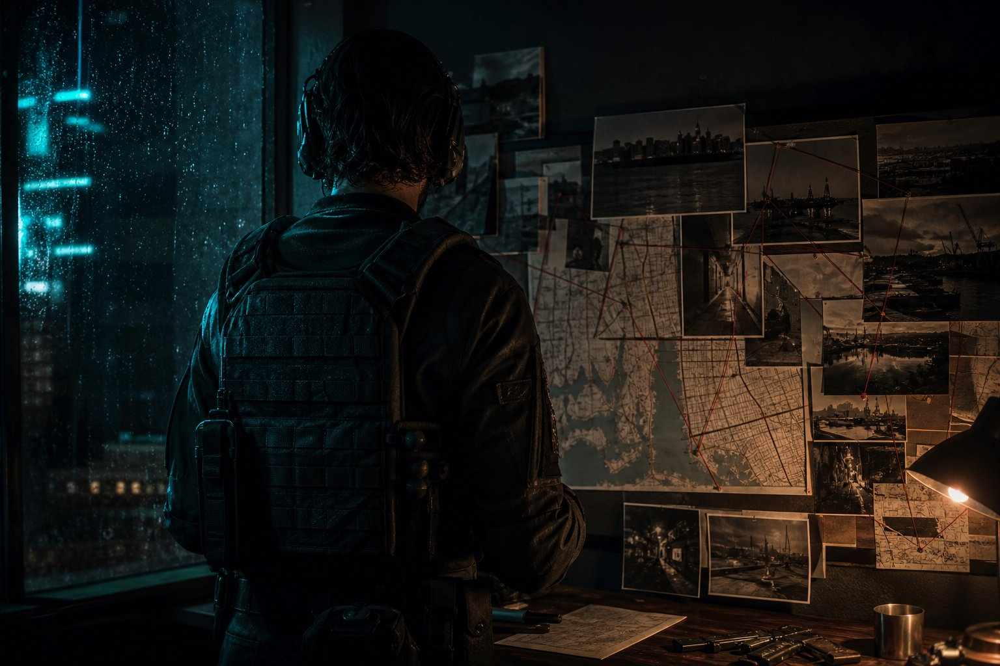

La pénétration d'armure post-RNG (S7)
Le changement le plus important de la Saison 7 : Utopia : MoreFun a supprimé l'effet de pénétration à faible probabilité contre les armures T5/T6. Avant, une munition sous-tier avait une chance « lottery » de traverser. Désormais :
- Il faut réduire la durabilité de l'armure sous un seuil avant d'obtenir une pénétration fiable et constante.
- La durabilité devient une stat de combat vivante : une plaque T6 à 20 % ne protège pas comme neuve.
- Conséquence tactique : tir en continu sur la MÊME plaque l'emporte sur les sprays dispersés. La connaissance armure/munition prime sur le hasard.
- Les caps par mode durcissent la logique : Normal = T4 max · Lockdown = T5 max (valeur max 900 000 Koen) — le T6 est réservé aux zones sans plafond.
🎯 Réflexe pro
Contre un casque haut de gamme, arrête de chasser la tête aveuglément : le patch S7 a augmenté le taux de perte de durabilité des casques T5/T6. Trois impacts T5 au même endroit (casque OU masque) suffisent à le faire céder — sinon décharge-toi dans le torse ou cherche les membres non protégés (leg-meta).Headshots : la fin du ricochet
« To ensure more consistent rewards for headshots, removed ricochet mechanics from all helmets and masks. » (patch notes S7). Autrefois, un headshot propre pouvait rebondir sur un casque — un dé à côté de ton aim. Ce n'est plus. Ajoute à cela :
- Une efficacité des headshots augmentée relative aux tirs au corps (TTK global légèrement allongé, headshots plus récompensateurs).
- Le fix de l'exploit de lean inverse qui masquait la hitbox de tête.
- Une portée effective augmentée pour la plupart des armes : les duels moyens sont plus constants.
En bref : ton aim récompense ton skill, plus ton chance. La pré-arme du crosshair à hauteur de tête n'a jamais autant payé.
Le sound design comme arme
« Sound is your radar. » Les distances d'audition communautaires (Ultimate Tips) :
| Action | Portée approximative | Contre-mesure |
|---|---|---|
| Marche accroupie (crouch) | Silencieuse* | Default pour les approches |
| Marche lente (slow walk) | ~5 m | Quasi inaudible — utile pour percer un couvert serré |
| Marche | ~15-20 m | Utile pour repositionner sans sprint |
| Sprint | ~30 m+ | Réservé aux rotations sûres |
| Ouverture de sac / loot | Forte, localisable | Swing sur les sons de loot = kills gratuits |
| ADS / changement de mode | Courte portée | Préparer son ADS avant le peek |
*sauf adversaire équipé d'un bon headset (GS2, Commander…).
- Intérieur (TV, Armory) : les Commander excellent — basses claires, pas de bruit de météo.
- Extérieur (Valley, Northridge) : les GS2 amplifient les hautes fréquences (pas dans l'herbe, tirs lointains).
- S7 : la mastery Acoustic Earpads réduit l'assourdissement des casques non-audio : +10-15 m de portée perçue.
- Active le HRTF : l'audio directionnel est un wallhack légal.

Peek, crosshair & gestion de l'information
- Crosshair toujours à hauteur de tête/torse — active le point blanc central pour ancrer le muscle memory (l'exception : les builds leg-meta visent les jambes, consciemment).
- Peek droit > peek gauche (~5-10 % vs ~25 % du corps exposé). Enchaîne le lean en HOLD pour des jiggles rapides.
- Jiggle pour l'info, swing + prefire là où l'ennemi tenait l'angle. Ce n'est pas de la science rocket : c'est de la séquence.
- Baiting shots : montre seulement le canon d'un angle, recule — l'ennemi tire, révèle sa position, tu swings sur le rechargement.
- Ne peek jamais deux fois le même angle : le muzzle flash + le son + le kill feed ont déjà raconté ton histoire.
- Sous pression : communiquer (positions, calibres, HP) — un callout vaut mieux qu'un spray paniqué.
Grenades : la pression gratuite
- MK2 (ananas) : mèche la plus courte — l'arme du plein combat (dégâts armure + membres).
- M67 (« bleeder ») : mèche longue — lob vertical (« sky-nade ») pour détoner à l'arrivée ; saignements sévères.
- Stuns : meta utility — écran noir, réduction de sensibilité, ping audio à travers les murs pour confirmer un rat.
- Usage offensif sous-utilisé : lance une grenade non cuite dans un couloir pour forcer l'ennemi hors de son angle, puis pousse derrière la détonation (l'audio l'assourdit et masque tes pas).
- S7 : la M290 stun est craftable au workbench — testée « top-tier breach utility » par la communauté.
Risk/reward par mode et par carte
| Mode | Cap S7 | Profil |
|---|---|---|
| Normal | Munitions/équipement T4 max | Progression, économie, répétition des fondamentaux — reste jusqu'à ~niv. 25 si tu apprends |
| Lockdown | T5 max · valeur max 900k | Le vrai test : entrée payante, joueurs engagés, meilleur loot. Sors ton A545/H416 avec du BS/7N39 |
| Forbidden | Sans plafond (T6 autorisé) | High roller : tout ou rien. Ne t'y aventure qu'avec un bankroll et un plan d'exfil |
- TV/Armory : kits CQB (P90, PCC-9 full-auto, AK-15SC) — jamais une SMG comme seule arme sur Farm/Armory mixtes.
- Valley/Northridge : contrôle de vision (M24, M110, U191) — les SMG courtes y meurent.
- Airport : plan secondaire CQB obligatoire — la carte joue toutes les distances.
- Rat vs chad : en S7, les caps rendent les « budget rats » compétitifs en Normal/Lockdown — le chad full T6 n'y entre plus.
Économie avancée : penser comme un banquier
- Objectif valeur/slot : ≥5k en Normal, ≥10k en Lockdown, au-delà en Forbidden. Un sac rempli de pacotille est une faillite silencieuse.
- Sous-cotation instantanée : dans l'UI de vente, tape « – » puis « + » : ton prix passe ~1 % sous le marché, sans saisie manuelle.
- Vente en masse : onglet Vente → bouton bulk sale en bas à droite. Empile par 5 pour rentabiliser chaque emplacement de vente hebdo.
- Réputation contact : finir les missions d'un contact baisse sa commission et débloque de meilleurs stocks/barters — c'est un investissement, pas une quête optionnelle.
- Arbitrage barter : acheter les matériaux < prix de revente du produit final (après taxe) = marge garantie. Les barters débloquent souvent le gear 1 niveau de loyauté plus tôt, parfois full moddé.
- Flipping Deke : 3 sets de 12 items/jour en restock limité (6 h/12 h). Exemples communautaires constamment profitables : casque O3 Heavy, 926 Composite, rigs Warrior/H-Tac A8/A9/Defender M4 (~20k/pièce, empilés ×5 ≈ 100k par slot de vente).
- Démontage d'armes : optiques, poignées et chargeurs se vendent souvent mieux séparés que l'arme entière.
- Règle des 10M : l'expérimentation « vrai gear » commence confortablement vers 10 millions de Koens. En dessous, joue lean, vends tout.
- ⚠️ Zéro RMT : acheter des Koens de site tiers = perdre Koens, gear, Merit Score et probablement le compte (DMA Guard déploiement depuis août 2026).
Craft & Recherche de formules (Workbench S7)
- Les formules sont au niveau max dès l'unlock (fini l'upgrade de bench) et les matériaux ont été rééquilibrés.
- Nouveau : Recherche d'amélioration — loote des Blueprints d'amélioration (boîtes à documents, vêtements, tiroirs, missions), investis-les sur UNE formule, choisis 2 résultats parmi les candidats (le reste est perdu).
- Stratégie : concentre-toi sur une seule formule pour atteindre les garantis or/rouge ; les résultats (ex. Unexpected Surplus IV = 30 % de remboursement) valent jusqu'à ~535k/craft sur un IND70 à 1,78M.
- Vérifie les caps avant de crafter : une .338 AP pen 6 est inutile en Normal/Lockdown (interdite).
- Les misc items ont de nouveaux usages : montres, journaux d'ouvriers, analyseurs de gaz → craft de munitions. Utilise « Vérifier l'usage » dans le stockage.
- Les résultats de recherche réinitialisent chaque saison — les formules, elles, restent.
Rôles d'escouade & callouts
| Rôle | Armes S7 | Mission |
|---|---|---|
| Entry | AK-15SC · PCC-9 full-auto · P90 | Clearer les pièces en premier, créer l'espace |
| Flex AR | H416 · A545 · AK-12 | Couvrir le milieu, faire les trades |
| Marksman | M110 double détente · M24 · U191 | Tenir les lignes de visée, caller les peeks |
| Anchor | FAL kit recul · RPK-16 · MK14 | Tenir les angles, punir les pushes |
- Crée un squad channel : points de recherche partagés et récompenses communes.
- Callouts simples et standardisés : « joueur à 120, derrière le grange, 1 casque ».
- Post-kill : attends. Check les coéquipiers, écoute avant de looter le corps — les « free kills » sur looteurs pressés sont la monnaie du jeu.
Dark Zone, carry & exfil sous pression
- Planifie l'exfil AVANT d'engager un fight looté : route qui rentre dans le timer avec marge de sécurité.
- Laisse derrière toi les objets lourds à faible valeur si ils te ralentissent (poids > mouvement > survie).
- Container sécurisée 3×3 : récompense de mission de saison — remplis-la d'abord, le reste est du bonus.
- Items verrouillés Tactical Ops : non containerables tant qu'indéséquilibrés — extrait-les une première fois.
- En Infected Zone (S7), garde une sortie de secours : les hordes ferment les routes. Le marchand in-raid peut décharger ton sac — utilise-le avant le point chaud final.
- Ne reste jamais au dernier extract « par principe » : sur TV par ex., l'ascenseur (90 s en Forbidden vs 40 s) se joue aux dernières secondes — une bonne décision précoce vaut mieux qu'un clutch héroïque.
Réglages & performance
- Visibilité > joliesse : réglages Vidéo Basic/Low pour que les joueurs « popent » partout. La beauté ne tue personne ; les pixels si.
- FOV max, sensibilité 40-50 de base, HRTF ON, V-Sync OFF, cap FPS aligné sur ton écran.
- Lean en HOLD pour des jiggles plus rapides (toggle si c'est ton muscle memory — mais pratique le).
- FPS > graphiques : un 144 stable bat un 90 saccadé en duel.
🧠 État d'esprit vétéran
Tu ne survivras pas chaque raid. 40-60 % d'extraction est le standard des bons joueurs. Chaque mort est une donnée : quelle info tu n'avais pas ? Quel bruit tu as ignoré ? Quel moment tu as looté trop longtemps ? Le skill dans ABI n'est pas l'aim — c'est la décision sous incertitude.FAQ expert
Oui pour T5/T6 : la pénétration est désormais liée au seuil de durabilité de l'armure. Une plaque bien entretenu résiste ; une fois fatiguée, elle cède de façon prévisible. Plus de « dé gâté ».
Les deux sont tier S. A545 : cadence 900 RPM, concurrent direct du H416, excellent avec du BS (T4) sous le cap Lockdown. H416 : plus stable en long, plus polyvalent en solo flex. L'AK-12 reste le meilleur rapport perf/budget T5-capable.
Les 12 points (6 de base + 3 au niv.19 + 3 au niv.26) se réallouent gratuitement et sans cooldown hors raid. Pour du loot : Survival/Support (recherche rapide, Porter…). Pour le PvP : Combat (Last Stand, Focus Puller…). Équipe 1 Core Mastery S7 selon la mission de la saison.
Dès que l'objectif de raid est atteint et que le sac est rentable par slot (règle 5k/10k). Tout combat supplémentaire est une mise : le EV positif ne se joue que si la mise est justifiée — pas par ennui.
Voir aussi : les factions de la Dark Zone · Voir aussi : la Dark Zone ·Sources — Patch notes Saison 7 MoreFun/Steam (ricochet, durabilité, caps, buffs portée) · timesaver.gg (headshot/helmet S7, mastery, workbench, barter, economy) · reddit r/ArenaBreakoutInfinite Ultimate Tips 2.0/3.0 · abibuilder.com S7 loot & economy guides · bittopup/mmoexp tier lists S7. Vérifié le 17 novembre 2026.